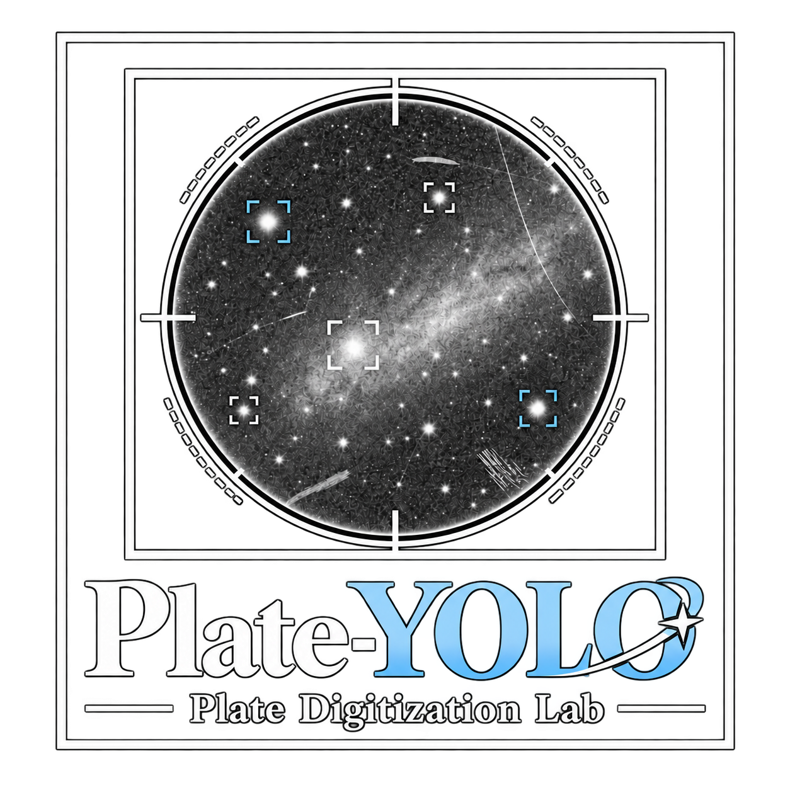
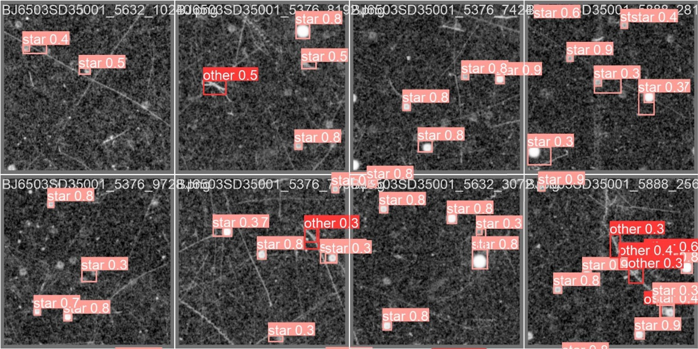
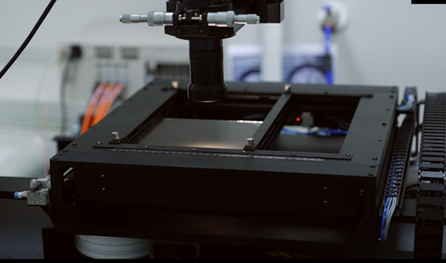
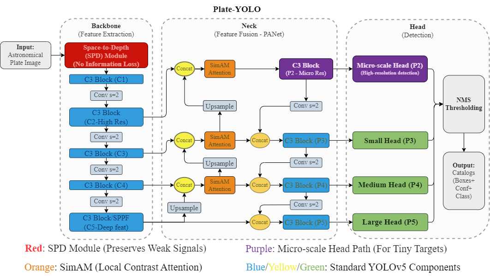

上海天文台 · 天文底片数字化实验室Shanghai Astronomical Observatory · Plate Digitization LAB

星鉴 · Plate-YOLOPlate-YOLO · 星鉴识别历史星光，找回百年观测Detect the Stars. Recover a Century of Observations.
中国科学院上海天文台Shanghai Astronomical Observatory, Chinese Academy of Sciences
中国科学院大学University of Chinese Academy of Sciences
相关研究论文已被 The Astronomical Journal（AJ）接收。The research paper has been accepted by The Astronomical Journal (AJ).
让百年星空，重新成为可用数据A Century of Sky, Ready for New Discoveries
划痕、污损和微弱星像，让一些珍贵的历史底片长期停留在“看得见，却难以测量”的状态。星鉴（Plate-YOLO）从复杂底片中识别恒星，为自动天体测量定标提供可靠的源数据，让更多历史观测重新进入科学研究。Scratches, blemishes, and faint stellar images can leave valuable historical plates visible but difficult to measure. Plate-YOLO identifies stars in complex plate images and supplies reliable source detections for automated astrometric calibration, bringing more historical observations back into scientific use.

来自历史底片数字化一线Built on Hands-On Plate Digitization
星鉴由中国科学院上海天文台天文底片数字化实验室研发。从高精度扫描到恒星识别与坐标定标，团队长期面对历史底片的真实处理难题，将数字化经验转化为专门面向底片的智能检测能力。Plate-YOLO was developed by the Astronomical Plate Digitization Laboratory at Shanghai Astronomical Observatory, Chinese Academy of Sciences. Working from high-precision scanning through stellar identification and astrometric calibration, the team brings practical experience with historical plates to a purpose-built detection framework.

实验室拥有 5 台高精度扫描仪，其中 4 台亚微米级测量设备为自主研制；已完成我国 29,314 张历史底片的数字化，并开放共享其中 15,696 张的图像及天体测量成果。与多个国家天文机构的合作，进一步积累了约 5 万张国际历史底片的数字化经验。The laboratory operates five high-precision scanners, including four in-house submicrometer-level measuring systems. It has digitized 29,314 Chinese historical plates and shared images and astrometric results for 15,696 of them. International collaborations have added experience digitizing approximately 50,000 plates from overseas archives.
让难以定标的底片，重新找到星空坐标Putting Unsolved Plates Back on the Sky
在乌兹别克斯坦乌鲁伯天文研究所（UBAI）的历史档案中，星鉴让 146 张传统方法未能定标的底片重新获得天球坐标。那些曾经难以利用的观测记录，由此有了重新参与天体位置与长期变化研究的机会。In the historical archive of the Ulugh Beg Astronomical Institute (UBAI), Uzbekistan, Plate-YOLO recovered celestial coordinates for 146 plates that conventional methods could not solve, making those observations available again for studies of stellar positions and long-term changes.
本次测试中，非彗星跟踪底片全部成功定标Every non-comet-tracking plate in this test was successfully solved
测试范围：150 张原未定标底片，整体恢复率为 97.3%；排除 4 张仍未定标的特殊彗星跟踪底片后，非彗星跟踪子集恢复率为 100%。Test scope: 150 previously unsolved plates, with an overall recovery rate of 97.3%. Excluding four comet-tracking plates that remained unsolved, recovery was 100% within the non-comet-tracking subset.
识别更可靠，处理更高效More Reliable Detections. Faster Processing.
从复杂背景中，找出真正的恒星Find the Stars Among the Defects
针对微小、微弱的星像，星鉴优化了目标检测与定位能力，并在同一个模型中区分恒星与非恒星结构。减少划痕、污损等伪源的干扰，为后续星表匹配提供更可靠的起点。Designed for tiny, faint stellar images, Plate-YOLO improves detection and localization while distinguishing stars from non-stellar structures in one model. Rejecting artifacts such as scratches and blemishes provides a more reliable starting point for catalog matching.
更快完成源检测，为批量处理节省时间Spend Less Time on Source Detection
在已成功定标底片的测试中，星鉴平均每张底片的源检测耗时约 7.4 秒，SExtractor 约为 19.4 秒。约 2.6 倍的源检测速度，让大批量历史底片处理更高效。On already solved test plates, source detection took an average of 7.4 seconds per plate with Plate-YOLO, compared with 19.4 seconds for SExtractor. The approximately 2.6× speedup makes source detection more efficient for large plate collections.
适应不同档案，减少人工标注Adapt to New Archives with Less Manual Labeling
不同望远镜、感光材料与保存条件，会留下不同的星像特征。星鉴利用 Gaia 参考星表自动生成微调样本，使模型适应新档案，减少逐一人工标注的需求。检测得到的恒星位置经过亮度估计与排序后，交由 Astrometry.net 完成天体测量定标。Different telescopes, photographic materials, and storage conditions produce different stellar images. Plate-YOLO uses the Gaia reference catalog to generate fine-tuning samples automatically, adapting to new archives with less manual labeling. Detected stellar positions are ranked using estimated brightness and passed to Astrometry.net for astrometric calibration.
了解模型设计Explore the Model Design
模型基于 YOLOv5，结合 P2 高分辨率检测头、SPD-Conv、SimAM 注意力与 NWD 损失，分别增强小目标检测、空间信息保留、特征提取与微小目标定位。Built on YOLOv5, the model combines a high-resolution P2 detection head, SPD-Conv, SimAM attention, and NWD loss to improve small-object detection, spatial information preservation, feature extraction, and localization.

用今天的方法，追溯百年的变化Today’s Methods. A Century of Change.
一张底片，记录的是某个时刻的星空；跨越百年的底片档案，则保存了现代巡天无法替代的时间跨度。让更多底片获得可靠坐标，就能为恒星自行、长期变源和其他时域天文研究补充更早的观测依据。A single plate captures the sky at one moment; a century of plates preserves a time span that modern surveys alone cannot provide. Reliable coordinates make more of these records usable as earlier observations for stellar proper motions, long-term variability, and other time-domain studies.
星鉴将继续面向不同国家、望远镜与观测年代的档案开展适配，让珍贵的历史观测在新的研究中发挥作用。Future adaptation to archives from different countries, telescopes, and observing eras will help bring these historical observations into new research.
探索星鉴，开始你的底片研究Explore Plate-YOLO for Your Archive
从论文了解方法，进入代码仓库探索实现，并通过下方资源入口了解相关研究材料。Read the paper, explore the implementation, and follow the resource links below to learn more about the research materials.
引用本研究 Cite This Work
如果本研究对您的工作有所帮助，欢迎引用我们的论文。 If you find this work useful, please consider citing our paper.
@misc{xu2026plateyoloendtoendobjectdetection,
title={Plate-YOLO: An End-to-End Object Detection Framework for Robust Astrometric Registration of Historical Plates},
author={Quanfeng Xu and Zhengjun Shang and Shiyin Shen and Yong Yu and Mingyang Ma and Zhenghong Tang and Meiting Yang and Jing Yang and Jianhai Zhao},
year={2026},
eprint={2610.25677},
archivePrefix={arXiv},
primaryClass={astro-ph.IM},
url={https://arxiv.org/abs/2610.25677},
}
研究团队与项目支持 Research Team and Acknowledgments
本研究由中国科学院上海天文台徐权峰等人完成， 沈世银和于涌为通讯作者。 研究获得国家重点研发计划、国家自然科学基金及 中国科学院国际合作项目等支持。 This research was conducted by Quanfeng Xu and collaborators at the Shanghai Astronomical Observatory, Chinese Academy of Sciences, with Shiyin Shen and Yong Yu as corresponding authors. The work was supported by the National Key R&D Program of China, the National Natural Science Foundation of China, and international cooperation programs of the Chinese Academy of Sciences.